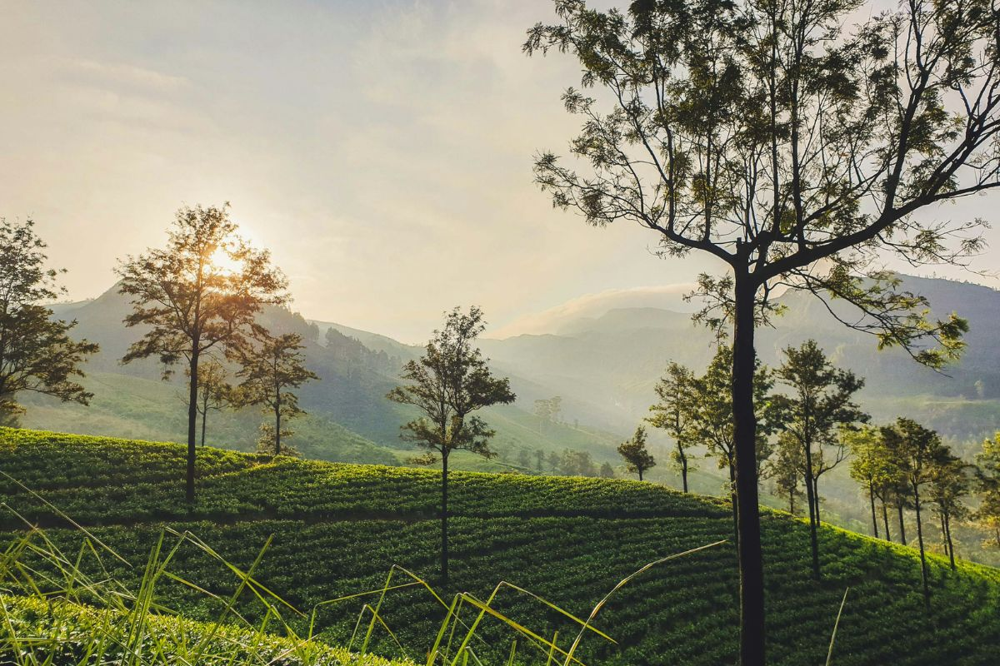

About Ceylon Tea
The story of Sri Lanka's liquid gold
History of Ceylon Tea
Ceylon tea has a rich history dating back to 1867 when Scottish planter James Taylor planted the first tea bushes in the Kandy region. The British colonial government encouraged tea cultivation after coffee plantations were devastated by a blight.
Today, Sri Lanka is the fourth largest tea producer in the world, with tea exports contributing significantly to the country's economy. The unique climatic conditions and soil types across different elevations create distinct flavors that are recognized globally.
Why Ceylon Tea is Special
- Single Origin: Grown exclusively in Sri Lanka
- Rainforest Alliance Certified: Sustainable farming practices
- Pure Ceylon: Protected Geographical Indication
- Diverse Flavors: From brisk to delicate depending on altitude
Our Mission
At Ceylon Tea, we're committed to bringing you the finest quality tea directly from the estates of Sri Lanka. We work with small-scale farmers and support sustainable agricultural practices to preserve this heritage for future generations.
